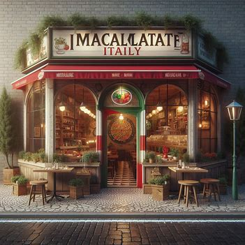

About us
Immaculate Italy was founded in 1990 by Maria and Antonio Bianchi, who immigrated from Italy to Durban, South Africa, bringing with them generations of family recipes and a passion for Italian cuisine. Their dream was to introduce the vibrant flavors and culinary traditions of Italy to the diverse community of Durban.
Starting as a modest trattoria in the heart of Durban's bustling city center, Immaculate Italy quickly became a local favorite, known for its commitment to using the freshest local ingredients combined with authentic Italian techniques. Over the years, the restaurant has grown in size and reputation, while remaining true to its founders' vision of providing an unforgettable dining experience.
Today, Immaculate Italy stands as a culinary landmark in Durban, celebrated for its warm hospitality, artisanal pasta, and mouthwatering pizzas. It continues to be a beloved destination for food lovers seeking a taste of Italy in the heart of South Africa.
